Lo que se vive
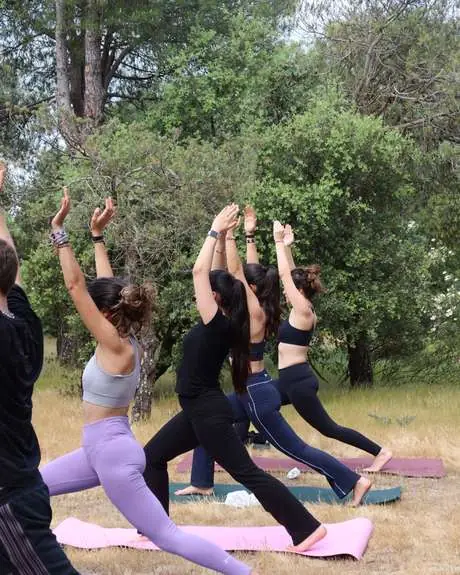
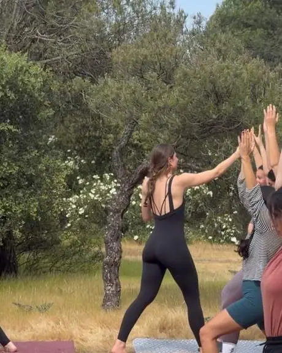
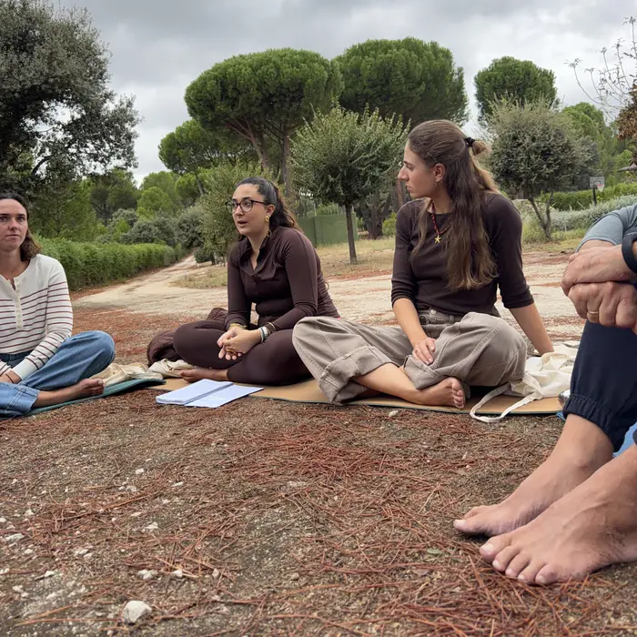
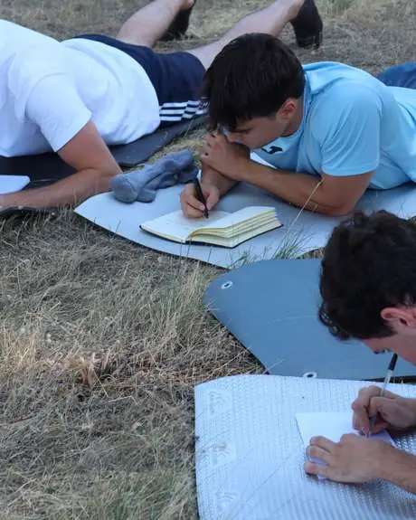
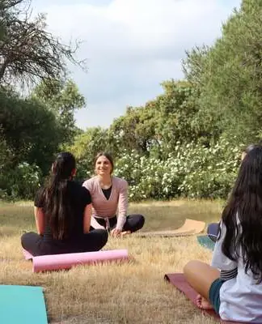
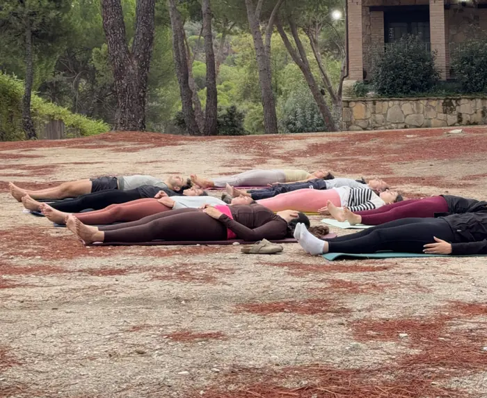
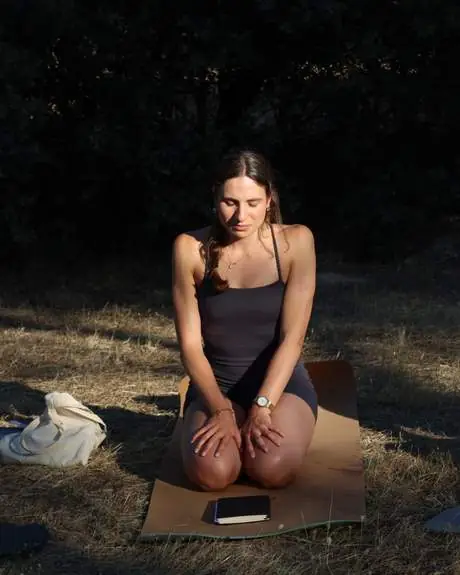
Después del retiro
Seis semanas después
Nos volvemos a ver en la sesión «Modo Avión», para ver tus avances.
Lo que se llevaron
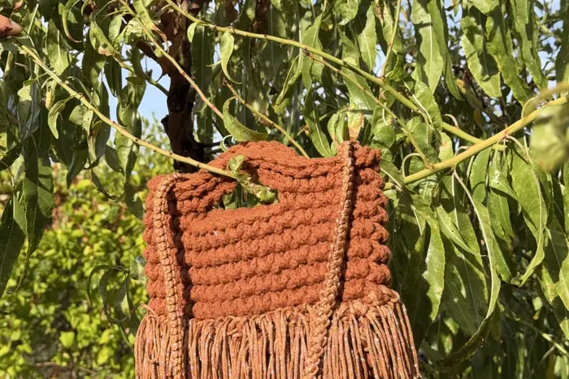
«Me ha encantado!! Es un ejercicio que no tiene edad específica, y he tenido la suerte de poder vivirlo con mi madre. Sara ha conseguido que desconectemos y que nos veamos capaces de hacer todas las posturas. Crea un grupo de confianza perfecto para hablar libremente y compartir experiencias. Repetiría 100% (y ya lo he recomendado a mis amigas jajajaja)»
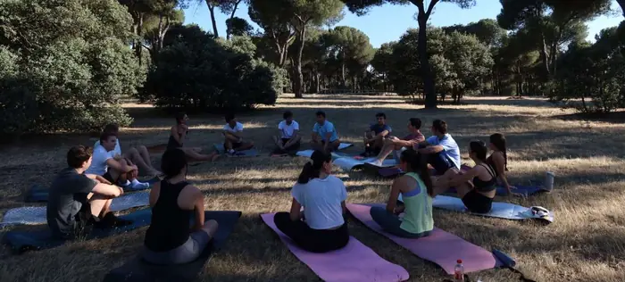
«La verdad que me ayudó mucho el parar y darme cuenta de lo enganchada al móvil que estaba . El ver que al resto les pasaba un poco lo mismo también me ayudó un montón»
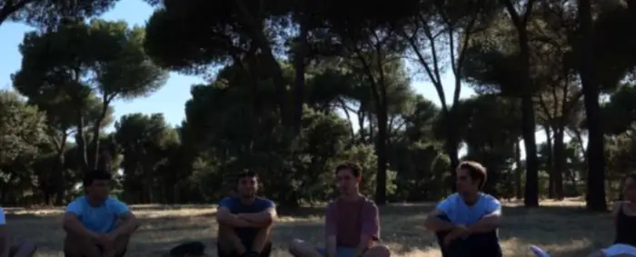
«La actividad fue bastante bien. Muy bien organizada. Me encantaron las dinámicas de grupo y actividades. Todos pudimos conectar muy bien y expresar nuestras inquietudes. Nos fuimos con pequeños recursos y muchas cosas que pensar y cambiar. …»
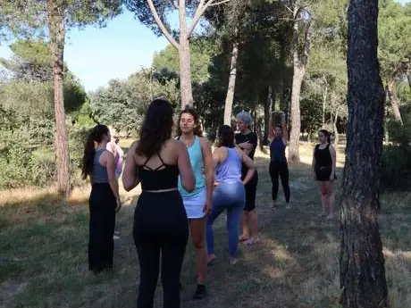
«Recomiendo muchísimo este tipo de experiencias sobretodo cuando vives en una ciudad como Madrid tan sumamente automática y con un día a día con muchos estímulos que no te deja desconectar tu mente en ningún momento. Ayuda mucho a volver a la realidad con las pilas cargadas!»
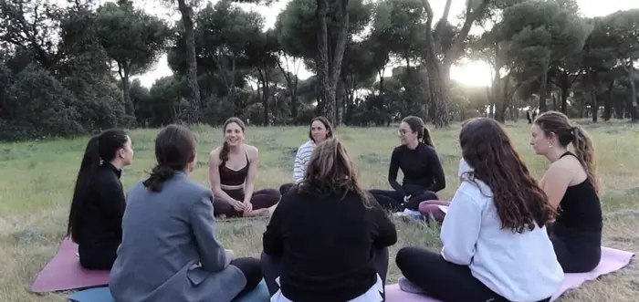
«Me encantó el evento porque me hizo parar y reflexionar sobre mi uso del móvil. Cuando salí me sentía mucho más presente y consciente en mi vida y con el uso de mi móvil. Gracias»
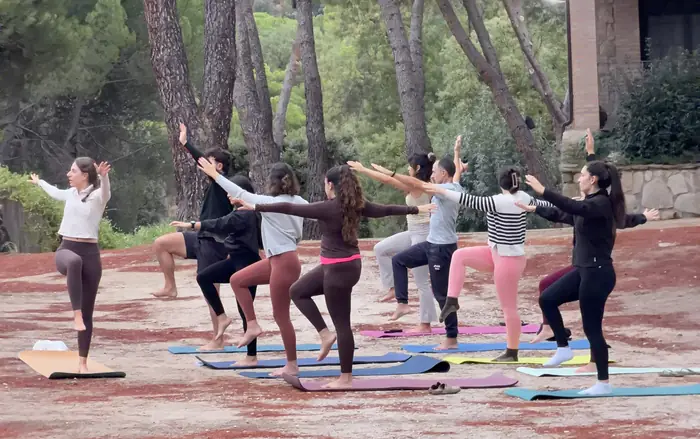
«Una experiencia muy bonita y diferente, que me ha permitido parar, desconectar y conectar conmigo. Me llevo momentos de paz, reflexión y, sobre todo, el haberme dado un tiempo diferente y agradable y darme cuenta de la importancia de la desconexión digital. Sin duda, una experiencia que recomiendo.»
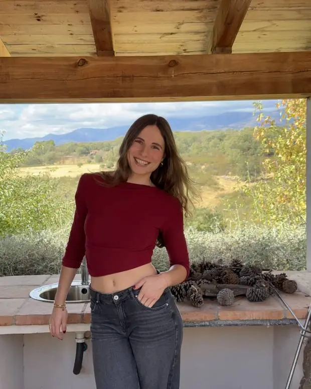
Quién está detrás
Sara
Reviondo surge de mi propia necesidad de reducir el uso del móvil y usarlo con más conciencia. Me apasiona el mundo de la psicología y por eso quiero ayudar a las personas desde el autoconocimiento y el crecimiento personal.
Estoy formada en yoga en Bali y en segundo año de terapia Gestalt. Lo mío es el crecimiento personal: el yoga, la psicología positiva, el mindfulness y la inteligencia emocional son mis herramientas.
Conmigo te escuchas, encuentras tu lugar seguro y conoces un poquito más de ti.